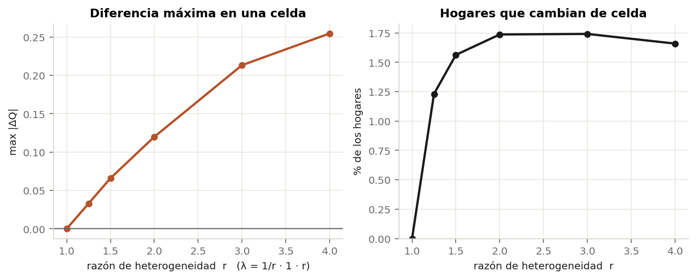
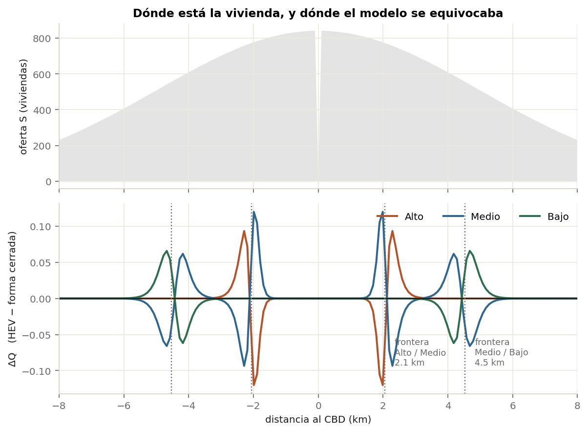
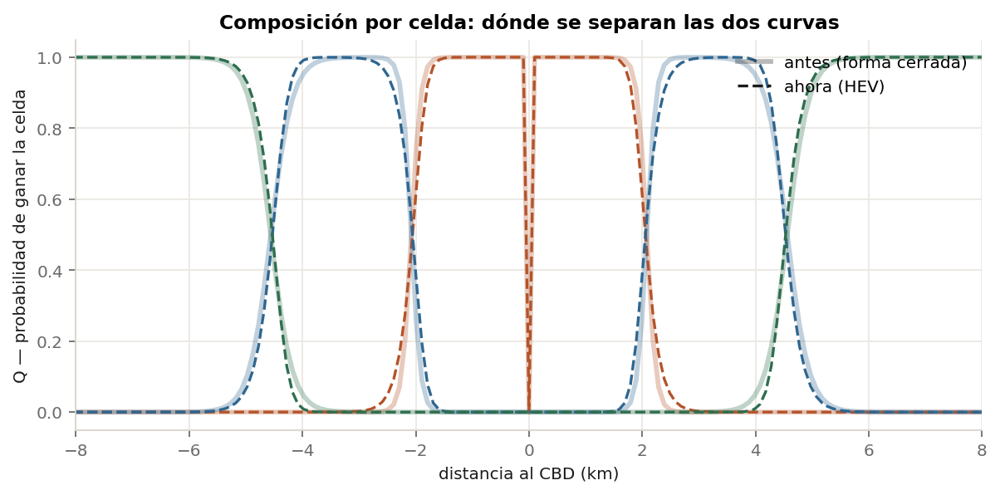
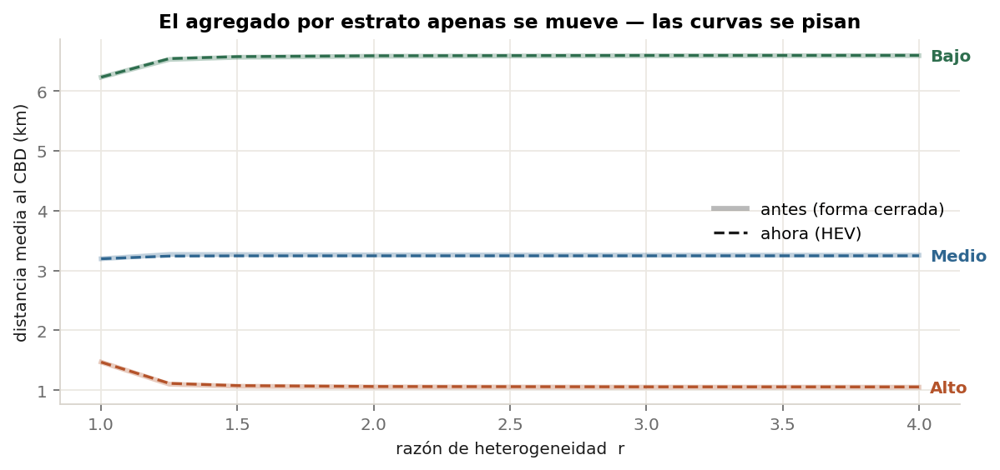

Los mismos datos, los mismos λ heterogéneos, resueltos con la forma cerrada —lo que hacía el simulador— y con la subasta heteroscedástica. La diferencia entre las dos es el impacto de aplicar la formulación correcta, sin recalibrar nada.
Hasta que se implementó el HEV, el módulo de uso de suelo tenía una limitación conocida: los λ_h tenían que ser iguales. Si se los cambiaba, el resultado se movía — pero ese movimiento no era atribuible a la diferencia de utilidad marginal del ingreso, sino a que se estaba aplicando la forma cerrada a pujas que ya no eran homoscedásticas. Un modelo distinto del que se creía estar corriendo.
Este documento mide cuánto cuesta esa diferencia. Dos corridas de la misma
ciudad, con los mismos y, α, ρ,
λ y β:
| solver | qué es | |
|---|---|---|
| antes | solve_logit |
La forma cerrada. Es literalmente lo que hacía el simulador: hasta el commit del HEV, ciudad.py llamaba solve_logit(..., beta=cfg.beta, ...) con estos mismos argumentos. |
| ahora | solve_subasta |
Con λ heterogéneos despacha al HEV. |
No hace falta desenterrar código viejo: solve_logit
conservó su semántica a través de D-31 —se la dejó intacta a
propósito, por ser la referencia homoscedástica con la que se demuestra
D-08—, así que hoy reproduce exactamente el comportamiento anterior. Y los
tests que fijan esa función no cambiaron y siguen pasando.
Por qué un barrido y no un caso. No sabemos el λ verdadero. Lo que sí se puede afirmar es cómo crece el impacto con la heterogeneidad, así que se barre la razón r con λ = (1/r, 1, r). En r = 1 los dos modelos son el mismo y sirve de ancla: esa fila tiene que dar cero exacto, y da, lo que confirma que la comparación mide el modelo y no una diferencia de implementación.
La utilidad marginal del ingreso es decreciente en el ingreso —al rico un peso adicional le sirve menos—, así que λ_alto < λ_medio < λ_bajo. Martínez lo dice explícitamente (p. 77) al derivar la disposición a pagar, y de ahí concluye que la varianza de la disposición a pagar crece con el ingreso. La forma λ = (1/r, 1, r) cumple esa monotonía en todas las filas.
No es una formalidad: es la configuración que el HEV existe para poder evaluar. La forma cerrada exige varianzas iguales, o sea que literalmente no puede representar el caso realista sin cometer el error que este documento mide.
Y la región importa. Si en vez de esto se sube λ_alto por encima de los otros —económicamente al revés— la respuesta del modelo se vuelve mucho más violenta: el estrato alto llega a 6,25 km en lugar de moverse entre 1,47 y 1,05 km. Esos números circularon en documentación vieja de este repo; no describen el modelo en su régimen válido.
Antes de mirar números conviene tener las dos expresiones a la vista, y comprobar que el código implementa cada una. Lo que sigue está cotejado contra las fuentes, no contra la memoria.
En _solve_fixed_point:
log_q = log_H + b * (score[:, i] - u_bar - p[i])
Q[:, i] = np.exp(log_q - logsumexp(log_q))Coincide término a término, con dos cosas que conviene declarar:
log_p = logsumexp(np.log(H_arr)[:, None] + b * (score - u_bar[:, None]), axis=0)
p = log_p / bO sea que la rama cerrada devuelve pi, el parámetro de localización — la ec. (4.27) sin el γ/βi. El HEV, en cambio, devuelve el máximo esperado. Los dos son el precio de la parcela; son dos resúmenes de la misma distribución, y el libro dice cuánto se llevan entre sí: exactamente γ/β.
La distinción de arriba es de segundo orden. Con β = 1 vale γ/β = 0,577, un 0,6 % del rango de precios. La brecha que se mide entre las dos ramas es mucho mayor, y la explica otra cosa:
| λ (a/m/b) | rango de p | brecha medida | γ/β | ūHEV − ūcerrada |
|---|---|---|---|---|
| 1,00 / 1,00 / 1,00 | 96,8 | 0,000 | 0,577 | [0 · 0 · 0] |
| 0,80 / 1,00 / 1,25 | 93,0 | 3,331 | 0,577 | [0 · −2,74 · −4,96] |
| 0,50 / 1,00 / 2,00 | 96,4 | 11,582 | 0,577 | [0 · −10,98 · −16,50] |
| 0,25 / 1,00 / 4,00 | 132,2 | 33,580 | 0,577 | [0 · −32,97 · −41,23] |
La brecha sigue a la última columna, no a γ/β.
El nivel absoluto del precio no está determinado por el modelo —en ninguna de las dos ramas—. Depende de la normalización ūalto = 0, que es una convención arbitraria: se ve en la fórmula que correr todos los ū en c corre todos los p en −c. Las dos ramas normalizan en el mismo lugar, pero llegan a ūmedio y ūbajo distintos —porque son modelos distintos— y el nivel se corre con eso.
Lo que fijaría el nivel de verdad es la cuarta condición de equilibrio de Alonso —precio en el borde igual a la renta agrícola—, que está documentada y no implementada. Sin ella el precio queda definido salvo una constante, y compararlo entre modelos no significa nada.
El gradiente sí sirve, y por una razón concreta: es invariante a esa constante. Se verifica más abajo — coincide entre ramas al 0,10 %.
En q_hev:
arg = (loc[h] - loc[g])[None, :] + theta[h] * _W[:, None]
np.multiply(z, np.exp(-np.exp(-np.clip(arg / theta[g], -_TOPE, _TOPE))), out=z)
acum[h] = _PESO @ z # _PESO = e^{-e^{-w}}·e^{-w}·dwCoincide término a término: el argumento lleva θi multiplicando a w y θj dividiendo, y el peso tabulado es exactamente la densidad de valor extremo por el ancho del trapecio.
Las dos ramas reciben el mismo score = y + f/λ. Lo único que las separa es la escala del ruido:
| escala del ruido de la puja | qué supone | |
|---|---|---|
| cerrada | 1/β, común | que la varianza de la disposición a pagar es igual entre estratos |
| HEV | θh = 1/(β·λh) | que la precisión del ruido en útiles es común, y la de la puja hereda λ |
El θh del HEV sale de la ec. (4.3) del libro: la disposición a pagar es qhi = yh + (fh−uh)/λh + εhi/λh, con ε/λ ~ Gumbel(0, bh) y bh = λh·μh. La precisión en dinero lleva λ; la forma cerrada la omite, y ése es exactamente el error que este documento mide.
El gradiente es invariante a la constante que separa los niveles, así que en principio sí se puede comparar. Pero eso vale si la brecha es exactamente constante, y no tiene por qué serlo: las dos ramas devuelven resúmenes distintos —parámetro de localización vs máximo esperado— y con θ heterogéneos esa diferencia puede variar de parcela a parcela y torcer el ajuste. Medido: la brecha tiene desviación estándar de 0,03 a 0,18 sobre un rango de precios de ~130, y el gradiente ajustado difiere en:
| λ (a/m/b) | cerrada | HEV | dif. relativa |
|---|---|---|---|
| 1,00 / 1,00 / 1,00 | −9,4949 | −9,4949 | 0,00 % |
| 0,80 / 1,00 / 1,25 | −8,7740 | −8,7750 | 0,01 % |
| 0,50 / 1,00 / 2,00 | −8,2119 | −8,2157 | 0,05 % |
| 0,25 / 1,00 / 4,00 | −9,5159 | −9,5254 | 0,10 % |
Como máximo 0,10 %. La comparación de gradientes de la §5 es válida; la de niveles no se hace, y por eso.
| r | λ (alto / medio / bajo) | max |ΔQ| | hogares reubicados | % del total |
|---|---|---|---|---|
| 1,00 | 1,00 / 1,00 / 1,00 | 0,0000 | 0 | 0,00 % |
| 1,25 | 0,80 / 1,00 / 1,25 | 0,0329 | 1.229 | 1,23 % |
| 1,50 | 0,67 / 1,00 / 1,50 | 0,0660 | 1.562 | 1,56 % |
| 2,00 | 0,50 / 1,00 / 2,00 | 0,1199 | 1.735 | 1,74 % |
| 3,00 | 0,33 / 1,00 / 3,00 | 0,2133 | 1.740 | 1,74 % |
| 4,00 | 0,25 / 1,00 / 4,00 | 0,2547 | 1.658 | 1,66 % |
«Hogares reubicados» es Σh,i |ΔQhi|·Si / 2: el transporte mínimo entre las dos asignaciones. El /2 está porque lo que sale de un lado entra en otro y sin él se contaría dos veces.

Las dos columnas cuentan cosas distintas y conviene no confundirlas. max |ΔQ| crece sin techo —llega a 0,25 en r = 4, o sea 25 puntos de composición en una celda— mientras que los hogares reubicados se estancan en ~1,7 %. Eso sólo puede significar una cosa: las diferencias grandes ocurren en pocas celdas. La §3 muestra en cuáles.
Éste es el resultado del documento, y no es el que yo esperaba: la diferencia no está repartida por la ciudad. Es cero en casi todas partes y se concentra en dos picos estrechos.

Los picos no están en la periferia despoblada, que sería la explicación cómoda: caen a 2,1 y 4,5 km, con oferta normal, y coinciden con los cruces de composición. El modelo incorrecto se equivocaba en las fronteras de la segregación, que es justamente lo que un modelo de uso de suelo existe para predecir.
| frontera | antes | ahora | corrimiento |
|---|---|---|---|
| Alto / Medio | 2,078 km | 2,057 km | −21 m |
| Medio / Bajo | 4,561 km | 4,531 km | −30 m |
Con r = 2. El cruce se interpola entre celdas; el ancho de celda es 99,5 m, así que el corrimiento es una fracción de celda.

Ahí está la reconciliación entre las dos columnas de la §2. La frontera se corre unas decenas de metros, pero como la transición es abrupta, ese corrimiento produce un ΔQ grande localmente. Medido: con r = 2, 20 celdas de 201 concentran el 61 % de la reubicación total, y 30 celdas el 78 %.
Hay que decirlo con la misma claridad: los agregados de ciudad prácticamente no cambian.
| r | d_alto | d_medio | d_bajo | gradiente p |
|---|---|---|---|---|
| 1,00 | 1,47 → 1,47 | 3,20 → 3,20 | 6,23 → 6,23 | −9,5 → −9,5 |
| 1,25 | 1,10 → 1,11 | 3,27 → 3,24 | 6,53 → 6,54 | −8,8 → −8,8 |
| 2,00 | 1,05 → 1,06 | 3,26 → 3,25 | 6,58 → 6,59 | −8,2 → −8,2 |
| 4,00 | 1,05 → 1,05 | 3,26 → 3,25 | 6,59 → 6,60 | −9,5 → −9,5 |
Distancia media al CBD por estrato, en km, antes → ahora. El gradiente de precio es la pendiente ajustada sobre las celdas con oferta.

En los agregados, el efecto de λ sobre la localización es casi idéntico en los dos modelos: el estrato alto pasa de 1,47 → 1,10 km con la forma cerrada y de 1,47 → 1,11 km con el HEV, y esa distancia de 0,01 km se mantiene en todo el barrido. Ahí la respuesta que daba el simulador antes era, en magnitud, casi la correcta.
En el detalle espacial no, y conviene no perderlo de vista al leer el párrafo anterior: en las fronteras entre estratos la composición de una celda cambia hasta 25 puntos, y 1.700 hogares quedan en otro lado. El agregado promedia justamente lo que el modelo estaba errando.
Aun así, nada de eso vuelve inocua la formulación vieja. La vuelve afortunada. El problema nunca fue el tamaño del número: era que la forma cerrada aplicada a pujas heteroscedásticas supone μ_h = b/λ_h, y como μ es una precisión, eso implica que la escala del ruido de utilidad —1/μ_h = λ_h/b— sea proporcional a λ: quien más valora el dinero tendría proporcionalmente más dispersión idiosincrática. Un supuesto que nadie eligió y que nadie había declarado. El HEV supone μ_h = β común —misma dispersión en utilidad para todos, y la de la puja hereda λ—, que es la lectura que el propio Martínez respalda al concluir que la varianza de la disposición a pagar crece con el ingreso. La ganancia es epistémica antes que numérica.
Que el HEV sea correcto no se demuestra comparándolo con el modelo que reemplaza: se demuestra contra la teoría y contra el sorteo. Eso está en La subasta resuelta a mano — bisección, núcleo y 100.000 subastas simuladas hogar por hogar— y en informe-hev.html §6. Acá sólo se mide cuánto cambia, dando por establecido cuál de los dos es el bueno.
cd sandbox/impacto-hev
uv run python impacto.py # las dos corridas, escribe salida/impacto.json
uv run python figuras.py # las 4 figuras desde el JSON
Determinista: la ciudad se arma con seed 42 y los dos solvers
reciben exactamente el mismo diccionario de argumentos, construido una sola
vez por cada r.
docs/DISCREPANCIES.md D-08 (λ no identificado) y D-31 (β en dos espacios).